3주차 — Isaac Sim 센서 시뮬레이션 (IMU·LiDAR·Radar)¶
학습목표
지난 강의에서 다룬 Isaac Sim의 기본 구조와 RGB/Depth 센서 시각화에 이어, 이번 강의에서는 IMU·LiDAR·Radar 세 가지 센서를 Isaac Sim 환경에 적용한다. 각 센서를 동적 물체에 부착하고, 센서 데이터를 획득·시각화하는 전체 실습 과정을 익혀 로봇 인지(perception)의 기초를 다진다.
출처 (Source)
본 자료의 그림·예제는 교안 「Isaac Sim 센서 시뮬레이션 (IMU·LiDAR·Radar)」(제작: ENGI UNIVERSE)를 바탕으로 재구성하였습니다. 코드는 교안의 설명을 충실히 따른 재구성 예제입니다.
⏱️ 3시간 구성¶
| 교시 | 시간 | 내용 | 근거 교안 |
|---|---|---|---|
| 1교시 | 50분 | Intro(센서 개요) + IMU Sensor 시뮬레이션 | §01~02 |
| 2교시 | 50분 | RTX LiDAR Sensor 시뮬레이션 | §03 |
| 3교시 | 50분 | RTX Radar Sensor 시뮬레이션 + Wrap-up | §04~05 |
🧭 1. Intro — 세 가지 센서 개요¶
지난 강의에서는 Isaac Sim의 기본 구조를 이해하고 RGB / Depth 센서 시뮬레이션 및 시각화 실습을 완료했습니다. 이번 강의의 목표는 IMU / LiDAR / Radar 센서를 Isaac Sim에 적용하고, 데이터 획득과 시각화까지 실습하는 것입니다.
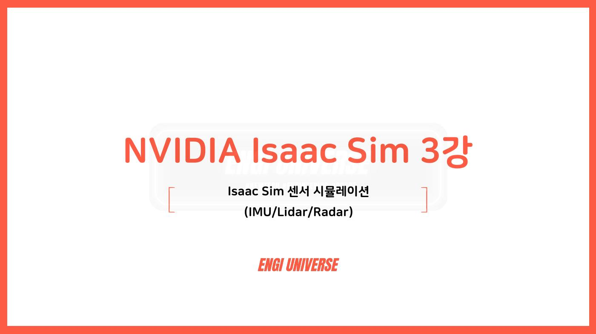
Isaac Sim 센서 시뮬레이션 (IMU·LiDAR·Radar) — 슬라이드 01 (출처: ENGI UNIVERSE)
| 센서 | 풀네임 | 측정 원리 | 활용 |
|---|---|---|---|
| IMU | Inertial Measurement Unit | 가속도·각속도·자세 측정 | 로봇의 움직임과 자세 변화 감지 |
| LiDAR | Light Detection and Ranging | 레이저 스캔으로 주변 구조·거리 인식 | 정밀한 3D 공간 맵 생성 |
| Radar | Radio Detection and Ranging | 전파 기반 거리·속도 측정 | 악천후 환경에서도 물체 감지 우수 |
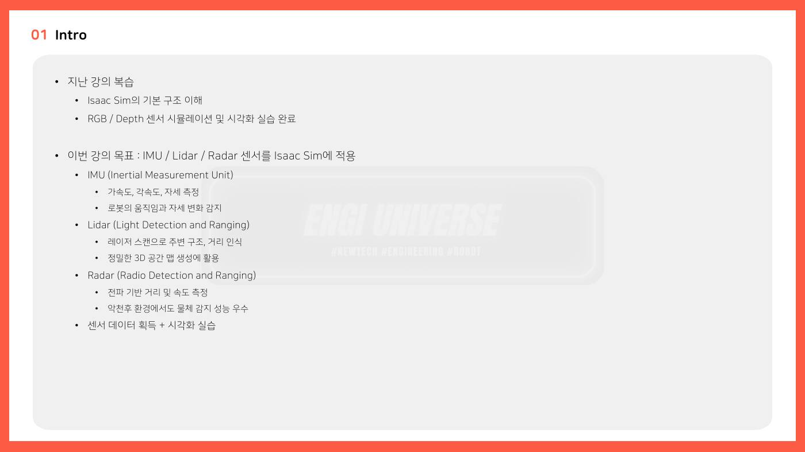
Isaac Sim 센서 시뮬레이션 (IMU·LiDAR·Radar) — 슬라이드 03 (출처: ENGI UNIVERSE)
이번 강의의 흐름
모든 센서 실습은 환경 구성 → 동적 물체 생성 → 센서 부착/생성 → 데이터 처리·시각화 → 시뮬레이션 루프 라는 공통된 단계로 진행됩니다.
📐 2. IMU Sensor 시뮬레이션¶
2-1. 시뮬레이션 환경 구성¶
IMU 실습은 GUI 모드로 Isaac Sim을 실행하고 물리 공간과 지면을 구성하는 것에서 시작합니다.
| 코드 요소 | 설명 |
|---|---|
SimulationApp(headless=False) |
Isaac Sim을 GUI 모드로 실행 (headless=True면 백그라운드 전용) |
World 객체 생성 |
물리 엔진이 적용되는 공간 생성 (단위 설정: 1단위 = 1미터) |
add_default_ground_plane() |
기본 지면(Ground Plane) 추가 → 동적 물체가 중력·충돌에 반응 |
reset() |
물리 엔진 초기화 |
from isaacsim import SimulationApp
simulation_app = SimulationApp({"headless": False}) # GUI 모드 실행
from isaacsim.core.api import World
my_world = World(stage_units_in_meters=1.0) # 1단위 = 1미터
my_world.scene.add_default_ground_plane() # 기본 지면 추가
my_world.reset() # 물리 엔진 초기화
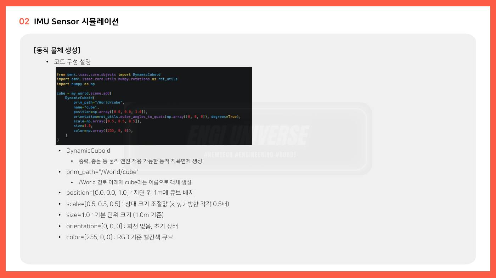
Isaac Sim 센서 시뮬레이션 (IMU·LiDAR·Radar) — 슬라이드 05 (출처: ENGI UNIVERSE)
2-2. 동적 물체 생성¶
DynamicCuboid 로 중력·충돌 등 물리 엔진이 적용되는 동적 직육면체(큐브)를 생성합니다.
from isaacsim.core.api.objects import DynamicCuboid
cube = my_world.scene.add(
DynamicCuboid(
prim_path="/World/cube", # /World 아래에 cube 이름으로 생성
position=[0.0, 0.0, 1.0], # 지면 위 1m에 배치
scale=[0.5, 0.5, 0.5], # x,y,z 각 방향 0.5배
size=1.0, # 기본 단위 크기 (1.0m 기준)
orientation=[0, 0, 0], # 회전 없음, 초기 상태
color=[255, 0, 0], # RGB 빨간색 큐브
)
)
파라미터 읽는 법
scale 은 size 에 곱해지는 상대 크기 조절값입니다. size=1.0 에 scale=0.5 를 주면 최종 크기는 각 축 0.5m가 됩니다.
2-3. IMU 센서 부착¶
생성한 큐브에 IMU 센서를 부착하고 주요 파라미터를 설정합니다.
| 파라미터 | 값/예시 | 의미 |
|---|---|---|
prim_path |
/World/cube/imu |
센서를 큐브 아래에 생성(부착) |
name |
"imu" |
센서 객체의 참조 이름 |
frequency |
60 |
60Hz 주기로 센서 데이터 수집 |
translation |
[0, 0, 0.5] |
큐브 중심 기준 z축 0.5m 위에 위치 |
orientation |
[1, 0, 0, 0] |
기본 회전 상태 (단위 쿼터니언) |
linear_acceleration_filter_size |
10 |
선형 가속도 필터 (노이즈 제거) |
angular_velocity_filter_size |
10 |
각속도 필터 (회전 데이터 부드럽게) |
orientation_filter_size |
10 |
자세 필터 (회전 방향 안정화) |
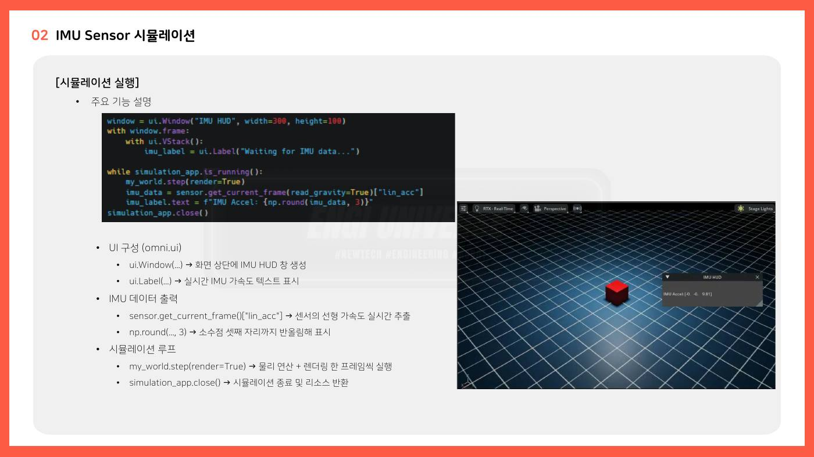
Isaac Sim 센서 시뮬레이션 (IMU·LiDAR·Radar) — 슬라이드 07 (출처: ENGI UNIVERSE)
2-4. 시뮬레이션 실행¶
omni.ui 로 IMU HUD 창을 만들어 실시간 가속도를 표시하고, 시뮬레이션 루프에서 센서 데이터를 추출합니다.
- UI 구성 (
omni.ui) —ui.Window(...)로 화면 상단에 IMU HUD 창 생성,ui.Label(...)로 실시간 가속도 텍스트 표시 - IMU 데이터 출력 —
sensor.get_current_frame()["lin_acc"]로 선형 가속도 실시간 추출,np.round(..., 3)으로 소수점 셋째 자리까지 표시 - 시뮬레이션 루프 —
my_world.step(render=True)로 물리 연산 + 렌더링을 한 프레임씩 실행 - 종료 —
simulation_app.close()로 시뮬레이션 종료 및 리소스 반환
import numpy as np
while simulation_app.is_running():
my_world.step(render=True) # 물리 연산 + 렌더링 한 프레임
frame = imu_sensor.get_current_frame()
lin_acc = np.round(frame["lin_acc"], 3) # 선형 가속도 소수점 3자리
# ui.Label 텍스트를 lin_acc 값으로 갱신
simulation_app.close() # 종료 및 리소스 반환
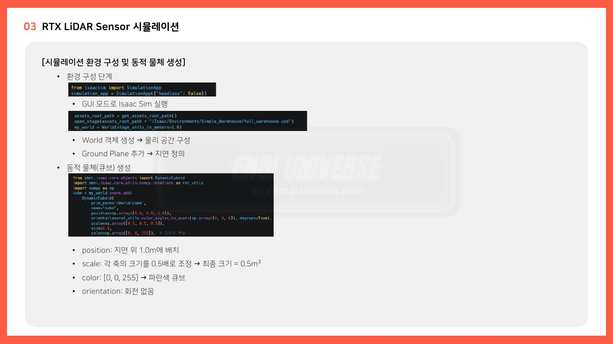
Isaac Sim 센서 시뮬레이션 (IMU·LiDAR·Radar) — 슬라이드 08 (출처: ENGI UNIVERSE)
🔦 3. RTX LiDAR Sensor 시뮬레이션¶
3-1. 환경 구성 및 동적 물체 생성¶
IMU와 동일한 단계로 환경을 구성하되, 이번에는 파란색 큐브를 사용합니다.
Step 1 — GUI 모드로 Isaac Sim 실행
Step 2 — World 객체 생성 → 물리 공간 구성
Step 3 — Ground Plane 추가 → 지면 정의
Step 4 — 동적 물체(큐브) 생성
position: 지면 위 1.0m에 배치scale: 각 축 0.5배 → 최종 크기 0.5m³color:[0, 0, 255]→ 파란색 큐브orientation: 회전 없음
3-2. RTX LiDAR 센서 생성¶
omni.kit.commands.execute(...) 명령어 시스템을 통해 RTX LiDAR 센서를 생성합니다.
| 파라미터 | 값/예시 | 의미 |
|---|---|---|
path |
"/sensor" |
센서가 생성될 Prim 경로 |
config |
"Example_Rotary" |
LiDAR 설정 프리셋 (회전식 예제 구성) |
translation |
(1, 1, 0.5) |
센서 위치 (x, y, z) |
orientation |
Gf.Quatd(1, 0, 0, 0) |
센서 회전 방향 (단위 쿼터니언) |
import omni.kit.commands
from pxr import Gf
_, sensor = omni.kit.commands.execute(
"IsaacSensorCreateRtxLidar",
path="/sensor",
config="Example_Rotary", # Example_Rotary, Example_FrontFacing 등
translation=(1, 1, 0.5),
orientation=Gf.Quatd(1, 0, 0, 0),
)
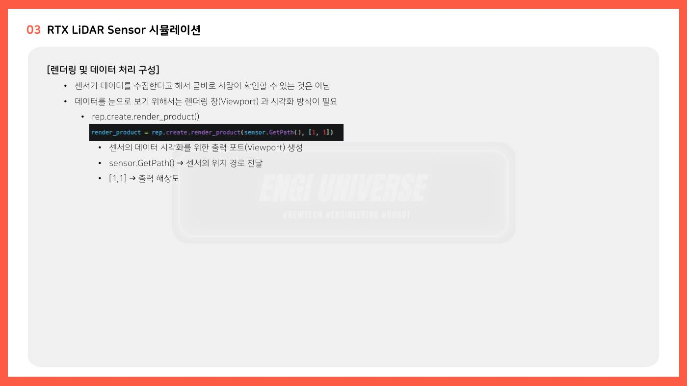
Isaac Sim 센서 시뮬레이션 (IMU·LiDAR·Radar) — 슬라이드 10 (출처: ENGI UNIVERSE)
3-3. 렌더링 및 데이터 처리 구성¶
센서가 데이터를 수집한다고 해서 곧바로 사람이 확인할 수 있는 것은 아닙니다. 눈으로 보기 위해서는 렌더링 창(Viewport) 과 시각화 방식이 필요합니다.
import omni.replicator.core as rep
# 센서 데이터 시각화를 위한 출력 포트(Viewport) 생성
render_product = rep.create.render_product(sensor.GetPath(), [1, 1])
여기서 잠깐! — [1, 1] 의 의미
[1, 1] 은 흔히 출력 해상도로 오해하기 쉽지만, 뷰포트의 해상도(width, height) 설정값이 아닙니다.
- 실제 의미: Replicator 내부에서 사용되는 뷰포트 위치 또는 식별자 역할 (렌더링 파이프라인의 고유 슬롯 지정값/기본값)
- 왜
[1, 1]을 쓰나? 센서 기반render_product생성 시 관례적으로[1, 1]을 사용하면 별도 조정 없이 안정적으로 작동하며, 해상도 설정은 다른 방식으로 별도 처리됩니다.
다음으로 LiDAR 데이터 어노테이터(Annotator)와 시각화용 작성기(Writer)를 연결합니다.
| 구성 요소 | 이름 | 역할 |
|---|---|---|
| 어노테이터 | RtxSensorCpuIsaacCreateRTXLidarScanBuffer |
RTX LiDAR로부터 스캔 데이터 추출 → CPU 메모리에 프레임 단위 버퍼로 저장 |
| 작성기(Writer) | RtxLidarDebugDrawPointCloudBuffer |
버퍼 데이터를 포인트 클라우드로 시각화 → 3D 점군 실시간 렌더링 |
# 스캔 데이터 어노테이터 연결
annotator = rep.AnnotatorRegistry.get_annotator(
"RtxSensorCpuIsaacCreateRTXLidarScanBuffer"
)
annotator.attach([render_product])
# 시각화용 포인트 클라우드 작성기 연결
writer = rep.writers.get("RtxLidarDebugDrawPointCloudBuffer")
writer.attach([render_product])
여기서 잠깐! — Annotator란?
Isaac Sim에서 센서 또는 시뮬레이션 중 생성된 데이터를 추출·가공·전달·시각화 할 수 있도록 처리하는 중간 모듈입니다. 센서/장면(Scene)에서 생성된 데이터를 분석용·연동용 포맷으로 가공하거나 시각화 구조로 변환하여, 시뮬레이션 내부 데이터 → 사용 가능한 출력 데이터 로 바꾸는 브릿지 역할을 합니다.
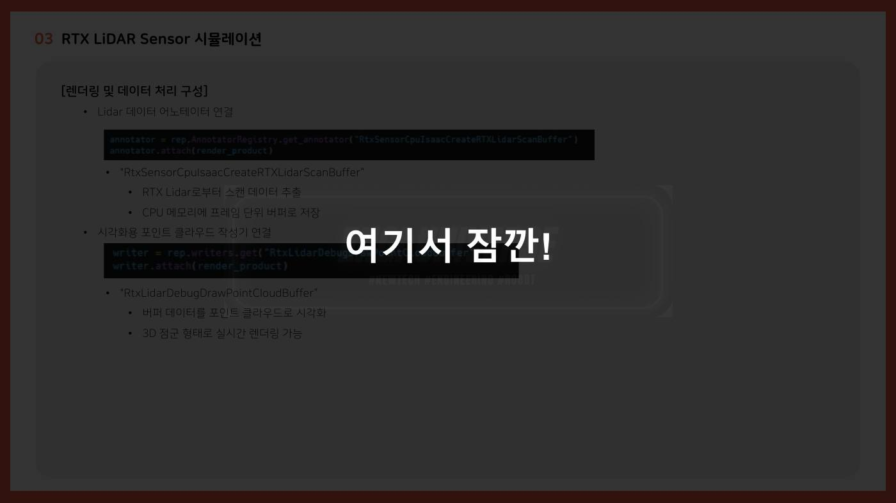
Isaac Sim 센서 시뮬레이션 (IMU·LiDAR·Radar) — 슬라이드 14 (출처: ENGI UNIVERSE)
3-4. 시뮬레이션 루프 실행 및 결과¶
while simulation_app.is_running():
simulation_app.update() # 현재 프레임 갱신(물리·센서·객체 상태 반영)
data = annotator.get_data() # 어노테이터에서 최신 센서 데이터 습득
print(data['distance']) # 센서~각 포인트 사이 거리 값 출력
simulation_app.close() # 자원 정리 및 메모리 해제
| 코드 | 설명 |
|---|---|
while simulation_app.is_running(): |
시뮬레이션이 종료될 때까지 반복하는 루프 |
simulation_app.update() |
현재 프레임을 한 번 갱신 (물리 연산·센서 업데이트·객체 상태 변화 반영) |
data = annotator.get_data() |
어노테이터로부터 최신 센서 데이터 습득 |
print(data['distance']) |
distance 필드(센서~포인트 거리)를 출력 |
simulation_app.close() |
루프 종료 후 자원 정리·메모리 해제 |
3-5. LiDAR 출력 데이터¶
| 항목 | 값 | 의미 |
|---|---|---|
numChannels |
128 | 레이저 채널 수 |
numEchos |
2 | 한 빔당 수신 가능 반사 수 (예: 투명 유리·얇은 잎 반사) |
numReturnsPerScan |
921600 | 1회 스캔당 총 측정 점수 |
| 필드 | 의미 |
|---|---|
data |
스캔된 각 점의 위치 좌표 (x, y, z 등) |
distance |
센서로부터 측정된 거리 (m) |
intensity |
반사 강도 값 |
index |
각 점의 인덱스 번호 |
beamId / emitterId |
빔 인덱스 / 발사기 ID |
elevation / azimuth |
고도각(vertical) / 방위각(horizontal) |
objectId / materialId |
객체 ID / 재질 ID |
normal / timestamp |
표면 법선 벡터 / 측정 시간 |
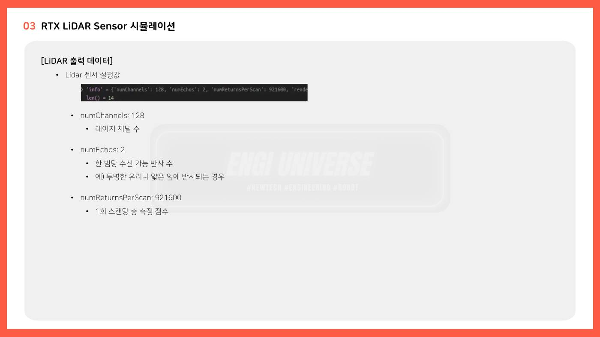
Isaac Sim 센서 시뮬레이션 (IMU·LiDAR·Radar) — 슬라이드 17 (출처: ENGI UNIVERSE)
📡 4. RTX Radar Sensor 시뮬레이션¶
Radar란?
Isaac Sim은 RTX 기반으로 Radar 시뮬레이션을 지원하여, 물체와의 거리 및 속도를 고정밀로 측정 하는 환경을 구현할 수 있습니다. Radar는 자율주행 차량이나 실외 로봇에서 널리 사용되며, 전파 를 활용해 주변 물체를 감지하고 방향·거리 정보를 획득합니다.
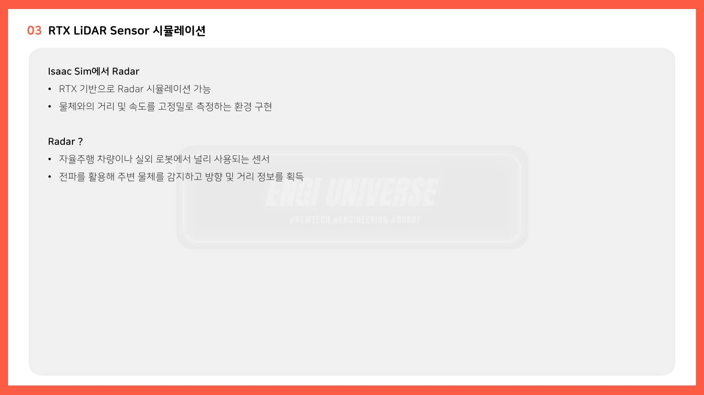
Isaac Sim 센서 시뮬레이션 (IMU·LiDAR·Radar) — 슬라이드 19 (출처: ENGI UNIVERSE)
4-1. 환경 구성 및 동적 물체 생성¶
LiDAR와 동일한 단계로 환경을 구성하되, 큐브의 위치를 달리합니다.
position:[0, -3.0, 1.0]에 배치scale: 각 축 0.5배 → 최종 크기 0.5m³color:[0, 0, 255]→ 파란색 큐브orientation: 회전 없음
4-2. RTX Radar 센서 설정¶
| 파라미터 | 값/예시 | 의미 |
|---|---|---|
omni.kit.commands.execute(...) |
— | 명령어 시스템을 통해 센서 생성 명령 실행 |
config |
"Example" |
Radar 설정 프리셋 (예제 구성) |
translation |
(0, 0, 0.25) |
센서 위치 (x, y, z) |
orientation |
Gf.Quatd(0.707, 0, 0, -0.707) |
센서 회전 방향 (단위 쿼터니언) |
import omni.kit.commands
from pxr import Gf
_, sensor = omni.kit.commands.execute(
"IsaacSensorCreateRtxRadar",
path="/sensor",
config="Example", # Example_Rotary, Example_FrontFacing 등
translation=(0, 0, 0.25),
orientation=Gf.Quatd(0.707, 0, 0, -0.707),
)
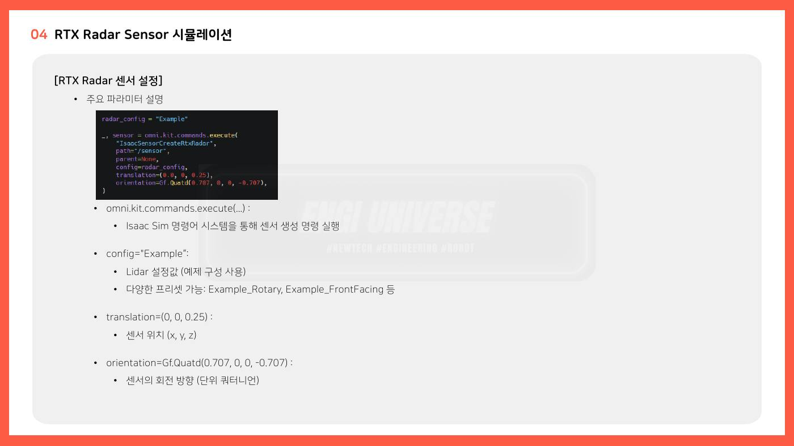
Isaac Sim 센서 시뮬레이션 (IMU·LiDAR·Radar) — 슬라이드 21 (출처: ENGI UNIVERSE)
4-3. 렌더링 및 데이터 처리 구성¶
- Render Product 생성 — 센서 데이터 렌더링 결과를 출력할 뷰포트 정의 (시뮬레이션 내 센서 감지 결과를 화면에 표시하는 필수 단계). 해상도는 최소 512×512 이상 권장(시각화 품질에 직접 영향)
- Annotator 등록 — 센서 데이터를 특정 포맷으로 변환. 예:
RtxSensorCpuIsaacComputeRTXRadarPointCloud→ Radar 신호를 포인트 클라우드로 변환 - Writer 등록 — 수집된 데이터를 화면에 시각적으로 표시. 예:
RtxRadarDebugDrawPointCloud→ Radar 데이터를 포인트 클라우드 형태로 렌더링(방향 벡터·속도 정보 등도 함께 시각화 가능)
import omni.replicator.core as rep
# 최소 512x512 이상 권장
render_product = rep.create.render_product(sensor.GetPath(), [512, 512])
annotator = rep.AnnotatorRegistry.get_annotator(
"RtxSensorCpuIsaacComputeRTXRadarPointCloud" # Radar 신호 → 포인트 클라우드
)
annotator.attach([render_product])
writer = rep.writers.get("RtxRadarDebugDrawPointCloud") # 시각화
writer.attach([render_product])
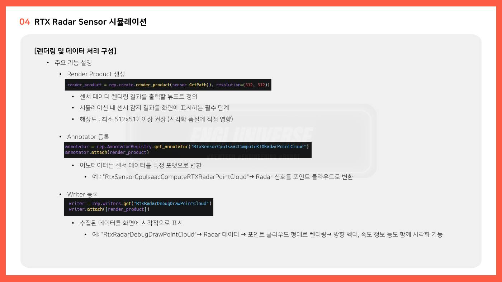
Isaac Sim 센서 시뮬레이션 (IMU·LiDAR·Radar) — 슬라이드 22 (출처: ENGI UNIVERSE)
4-4. 시뮬레이션 실행¶
while simulation_app.is_running():
simulation_app.update() # 매 프레임 시뮬레이션 상태 업데이트
data = annotator.get_data() # 현재 프레임의 센서 데이터 습득
simulation_app.close() # 시뮬레이션 내 자원 초기화
4-5. Radar 출력 데이터¶
| 항목 | 의미 |
|---|---|
maxAzRad / minAzRad |
최대 / 최소 방위각 (rad) |
maxElRad / minElRad |
최대 / 최소 고도각 (rad) |
maxRangeM |
최대 탐지 거리 (m) |
maxVelMps / minVelMps |
최대 / 최소 속도 (m/s, Doppler 기반) — 접근 시 음수, 멀어질 때 양수 |
| 필드 | 의미 |
|---|---|
Elevation |
객체들의 고도 각도 (rad) |
radialDistance |
객체까지 거리 (m) |
radialVelocity |
레이더 방향 속도 (m/s, +는 멀어짐) |
rcs |
레이더 반사 세기 (Radar Cross Section, m²) — 금속처럼 반사율 높은 물체일수록 큰 값 |
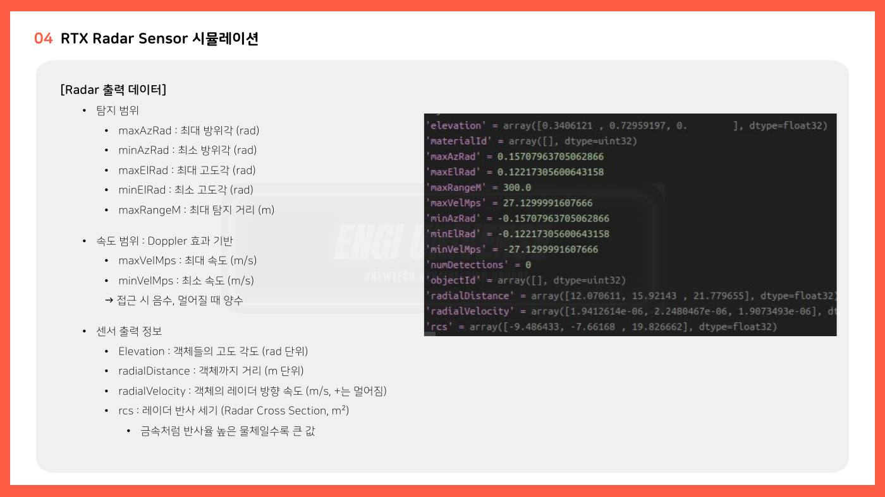
Isaac Sim 센서 시뮬레이션 (IMU·LiDAR·Radar) — 슬라이드 24 (출처: ENGI UNIVERSE)
🧩 5. Wrap-up¶
오늘 강의 내용 요약
- IMU 센서 를 시뮬레이션 상에서 구현해보고 사용 (가속도·각속도·자세)
- LiDAR 센서 를 시뮬레이션 상에서 구현해보고 사용 (포인트 클라우드·거리)
- Radar 센서 를 시뮬레이션 상에서 구현해보고 사용 (거리·속도·RCS)
세 센서 모두 환경 구성 → 동적 물체 생성 → 센서 생성·부착 → Render Product/Annotator/Writer 구성 → 시뮬레이션 루프 라는 공통 파이프라인을 따른다는 점이 핵심입니다.

Isaac Sim 센서 시뮬레이션 (IMU·LiDAR·Radar) — 슬라이드 26 (출처: ENGI UNIVERSE)
✅ 체크포인트¶
-
SimulationApp·World·add_default_ground_plane()로 센서 실습 환경을 구성할 수 있는가 -
DynamicCuboid로 동적 물체를 만들고 IMU 센서를 부착해lin_acc를 출력할 수 있는가 - RTX LiDAR 센서를 생성하고 Annotator/Writer로 포인트 클라우드를 시각화할 수 있는가
-
render_product의[1, 1]이 해상도가 아닌 식별자/슬롯 의미임을 설명할 수 있는가 - RTX Radar 센서의 출력(
radialDistance·radialVelocity·rcs)을 해석할 수 있는가
📊 평가 루브릭¶
| 항목 | 배점 | 기준 |
|---|---|---|
| 환경 구성 | 20 | GUI 실행·World·Ground Plane·reset 구성의 정확성 |
| IMU 시뮬레이션 | 25 | 큐브 생성·IMU 부착·get_current_frame 데이터 출력 |
| LiDAR 시뮬레이션 | 25 | 센서 생성·render_product·Annotator/Writer 포인트 클라우드 시각화 |
| Radar 시뮬레이션 | 20 | 센서 설정·512×512 렌더·Radar 출력 데이터 해석 |
| 개념 이해 | 10 | Annotator 역할·[1,1] 의미·센서별 측정 원리 설명 |
🔗 출처 및 참고자료¶
- 교안 「Isaac Sim 센서 시뮬레이션 (IMU·LiDAR·Radar)」 (제작: ENGI UNIVERSE)
- NVIDIA Isaac Sim 공식 문서 — https://docs.isaacsim.omniverse.nvidia.com
- Isaac Sim RTX Sensors (LiDAR/Radar) — https://docs.isaacsim.omniverse.nvidia.com/latest/sensors/index.html
- Omniverse Replicator — https://docs.omniverse.nvidia.com/extensions/latest/ext_replicator.html
📘 Isaac Sim 5.1.0 공식 문서¶
공식 문서 (NVIDIA Isaac Sim 5.1.0)
본 주차의 Isaac Sim/ROS 2 API·절차는 아래 공식 문서로 보강·검증할 수 있습니다.
🖼️ 원본 강의 슬라이드¶
원본 강의 슬라이드 전체 (26매)
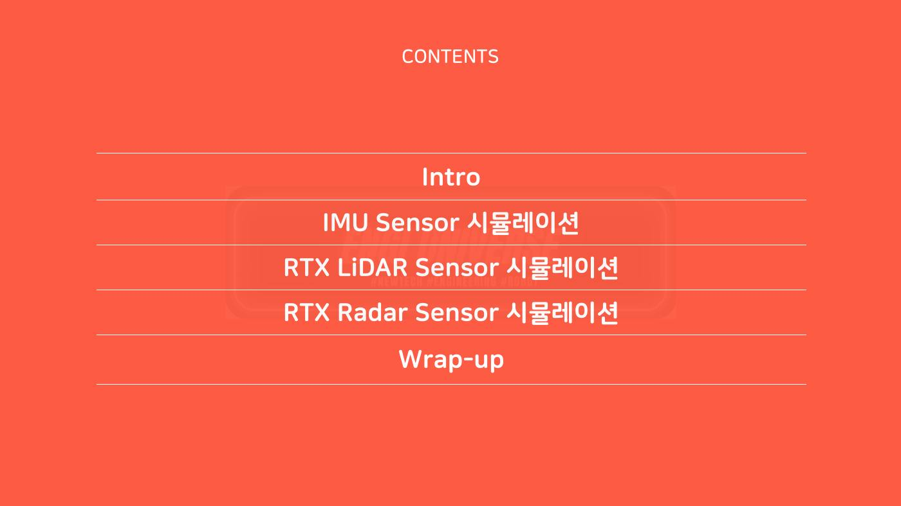
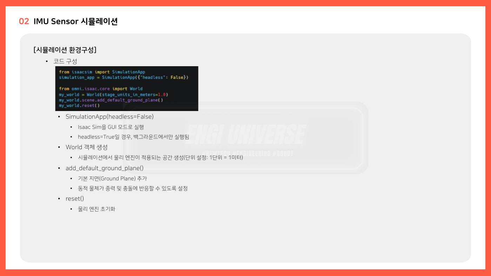
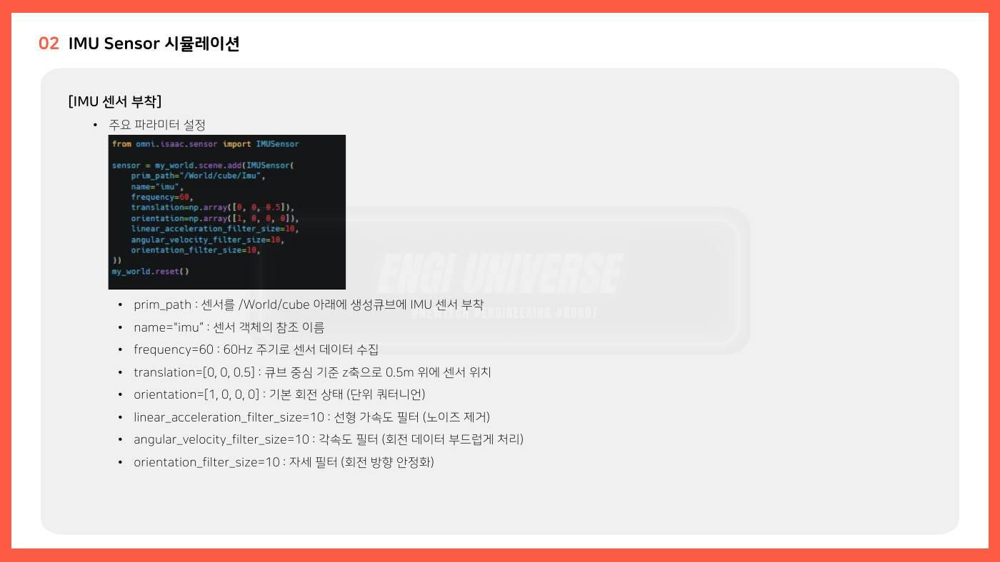
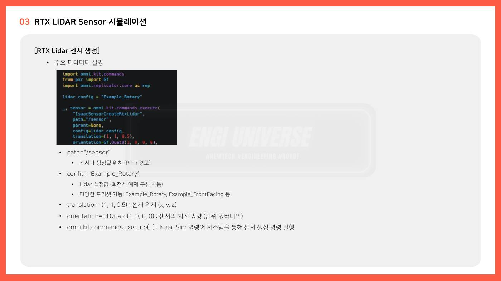
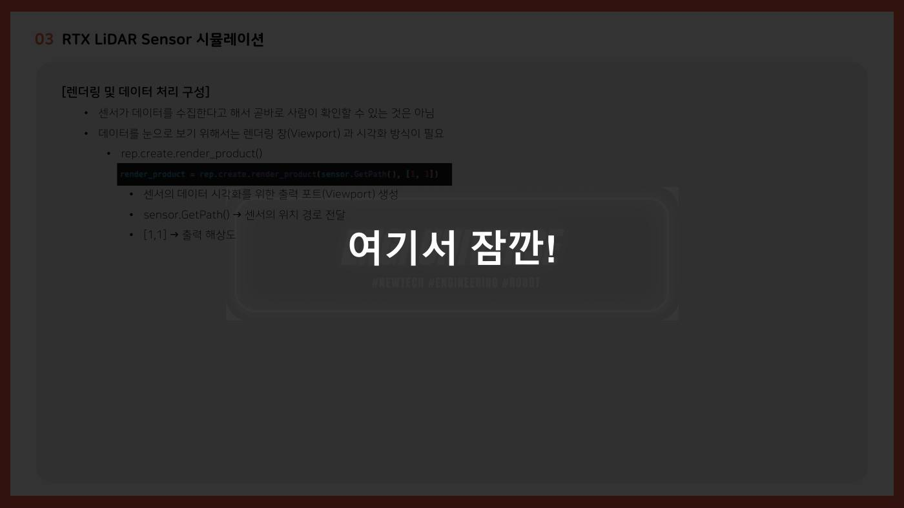
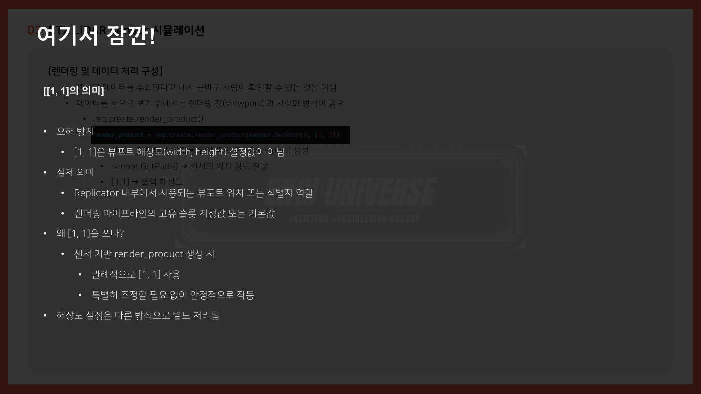
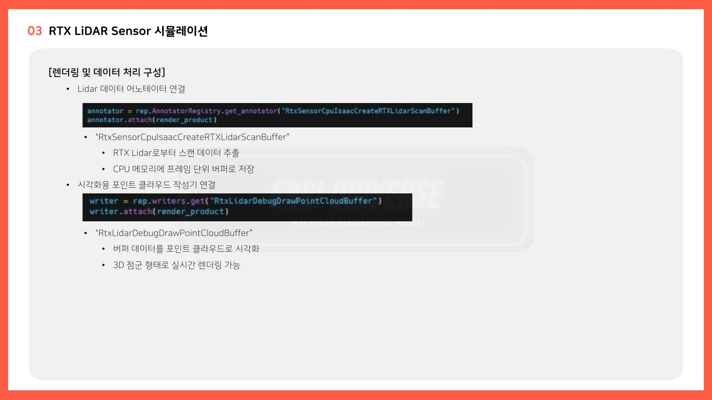
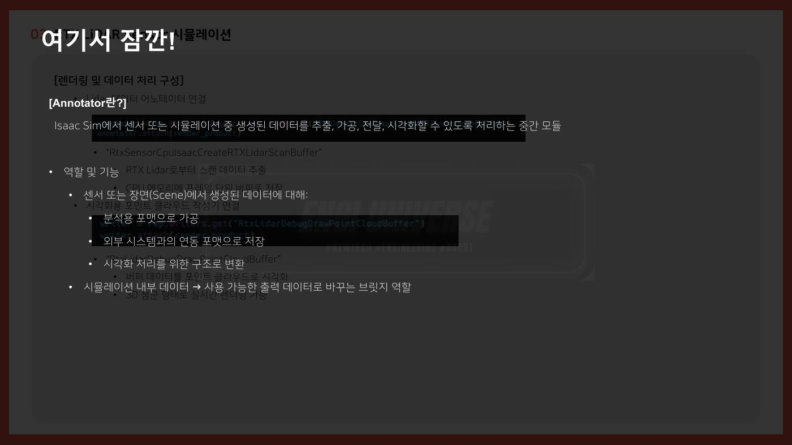
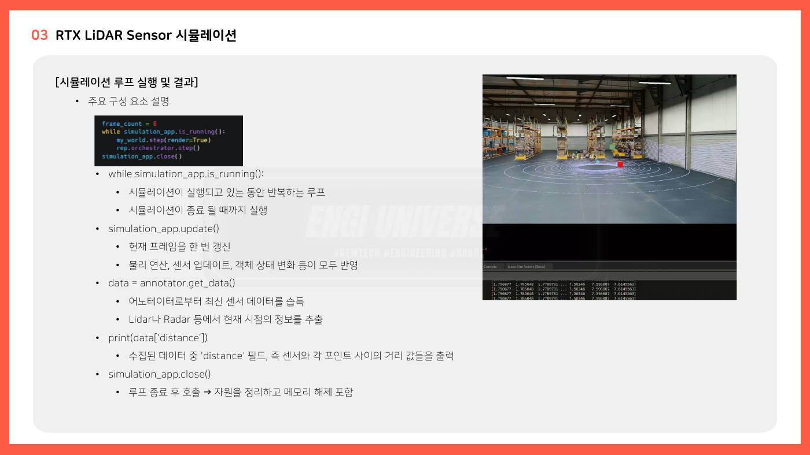
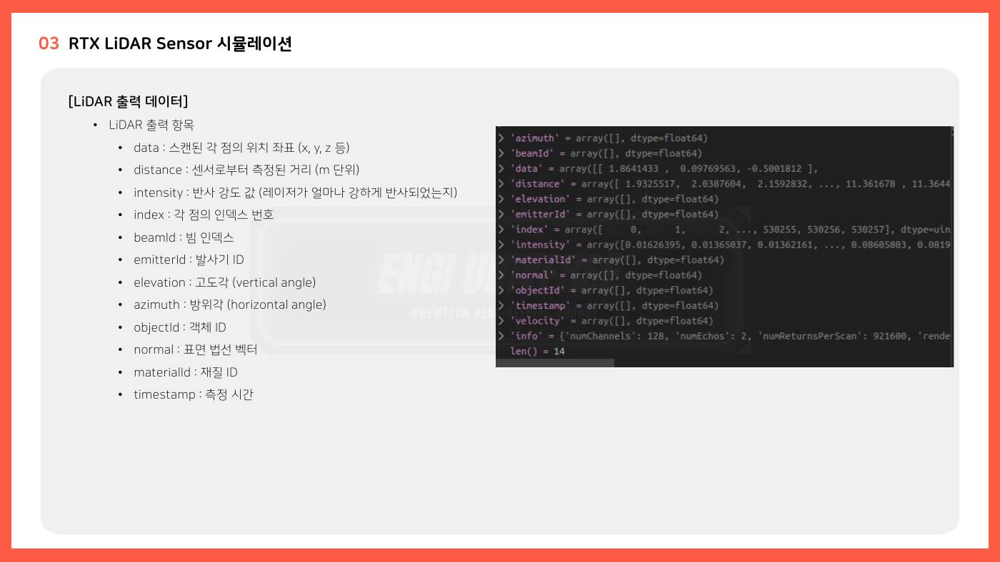
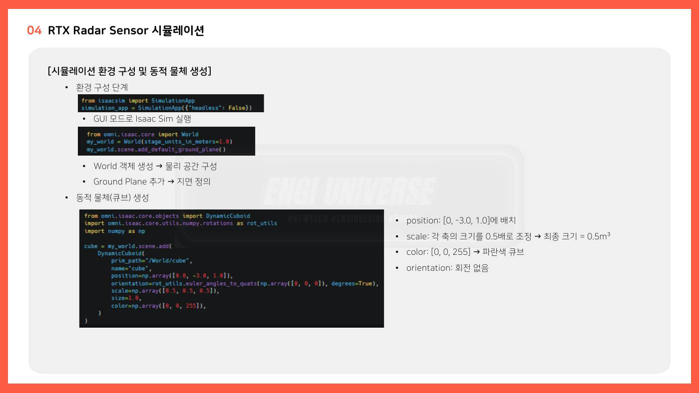
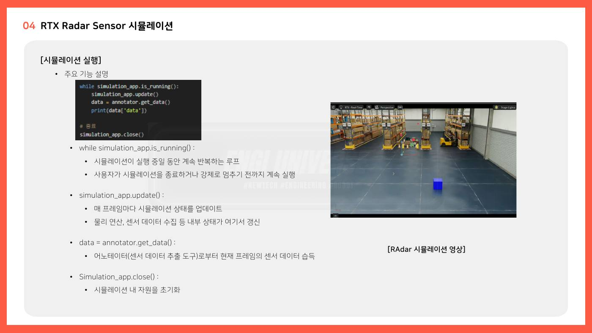
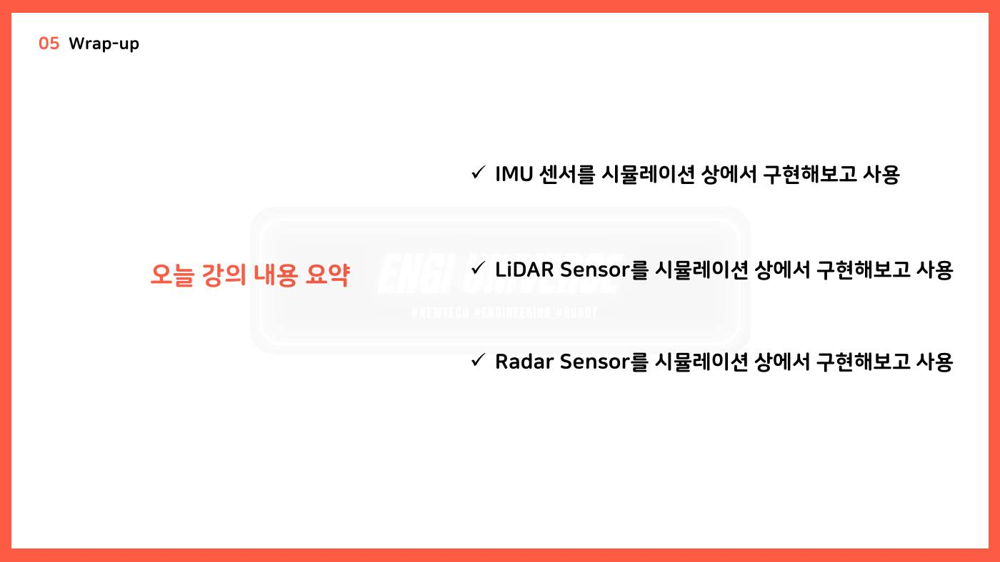